Next: Parameters
Up: Mean-Square Displacement
Previous: Mean-Square Displacement
Contents
Theory and implementation
Molecules in liquids and gases do not stay in the same place, but move constantly.
This process is called diffusion and it happens quite naturally in fluids at equilibrium.
During this process, the motion of an individual molecule does not follow a simple path [48].
As it travels, the molecule undergoes some collisions with other molecules which prevent
it from following a straight line. If the path is examined in close detail, it will be seen
to be a good approximation to a random walk. Mathematically, a random walk is a series of steps
where each step is taken in a completely random direction from the one before.
This kind of path was famously analysed by Albert Einstein in a study of Brownian motion. He showed
that the MSD of a particle following a random walk is
proportional to the time elapsed. This relationship can be written as
where 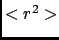 is the MSD and t is the time. D and C are constants.
The constant D defines the so-called diffusion coefficient.
The figure 4.34 shows an example of a MSD analysis performed on a waterbox of 768 water molecules.
Figure 4.34:
MSD calculated for a 100 ps MD simulation of 256 water molecules using NPT condition at 1 bar and 300 K.
|
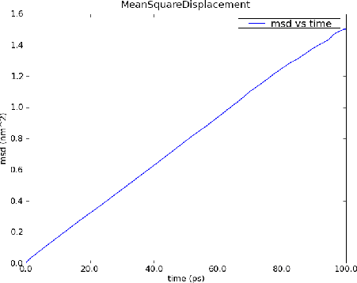
|
To get the diffusion coefficient out of this plot, the slope of the linear part of the plot should be calculated.
Defining,
the MSD of particle  can be defined as:
can be defined as:
where
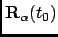 and
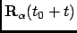 are respectively the position of particle at
times  and 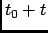.
One can introduce a MSD with respect to a given axis n:
and 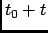.
One can introduce a MSD with respect to a given axis n:
with
The calculation of MSD is the standard way
to obtain diffusion coefficients from MD simulations. Assuming
Einstein-diffusion in the long time limit one has for isotropic
systems
There exists also a well-known relation between the MSD and the velocity
autocorrelation function. Writing
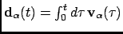 in Eq.
(4.16) one can show (see e.g. [50]) that
Using now the definition (4.19) of the diffusion coefficient one
obtains the relation
With Eq. (4.41) this can also be written as
Computationally, the MSD is calculated using the Fast Correlation Algorithm (FCA) [51]. In this
framework, in the discrete case, the mean-square displacement of a particle is given by
where 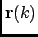 is the particle trajectory and  is the the number of frames of the trajectory. We define now the
auxiliary function
is the the number of frames of the trajectory. We define now the
auxiliary function
which is splitted as follow:
| 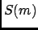 |
 |
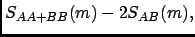 |
(4.25) |
| 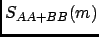 |
|
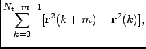 |
(4.26) |
| 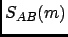 |
|
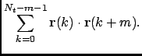 |
(4.27) |
The function  can be computed using the FCA method described
in Section A. For the following recursion
relation holds:
can be computed using the FCA method described
in Section A. For the following recursion
relation holds:
|
|
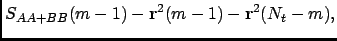 |
(4.28) |
| 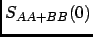 |
|
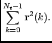 |
(4.29) |
This allows one to construct the following efficient scheme for the
computation of the MSD:
- Compute
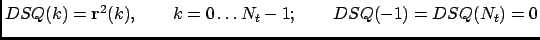.
- Compute
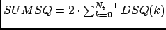.
- Compute using the FFT method.
- Compute MSD(m) in the following loop:
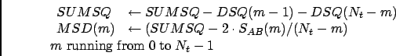
It should be noted that the efficiency of this algorithm is the same
as for the FCA computation of time correlation functions since the
number of operations in step (1), (2), and (4) grows linearly with
.
Next: Parameters
Up: Mean-Square Displacement
Previous: Mean-Square Displacement
Contents
pellegrini eric
2009-10-06